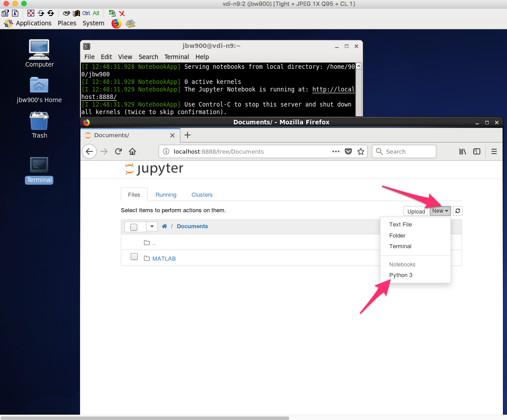
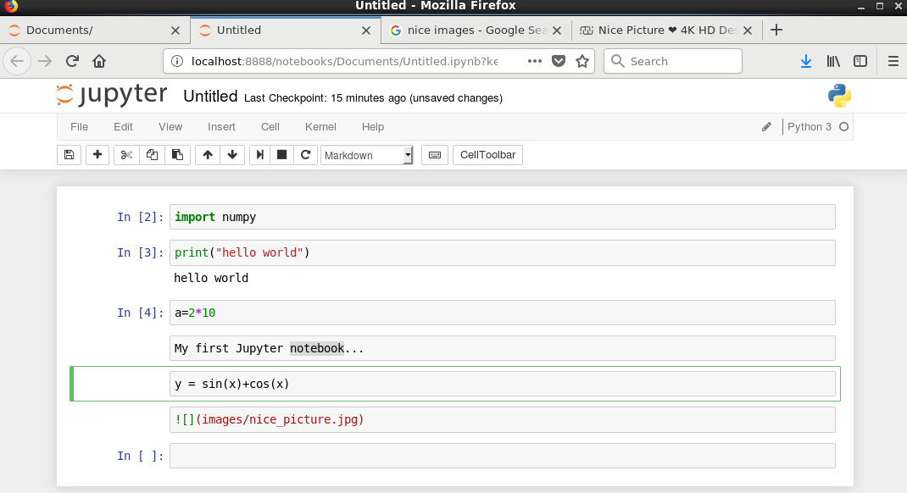

Python on the VDI: iPython/Jupyter Notebooks (Part III)¶
In this notebook:¶
- Using iPython Notebooks from the VDI
- Trouble shooting: can not login VDI?
Launching Jupyter (iPython) Notebook¶
Quick and easy way (if user-specific packages not required):
Load the python and ipython modules:
$ module load python3
$ module load ipython/4.2.0-py3.5
Launch the Jupyter Notebook application:
$ jupyter notebook
Using virtual environments:
To use along with customised python packages in a virtual environment, begin by following the steps in Python on the VDI: Part II.
Once you have a virtual environment setup with your packages (including Jupyter), proceed by loading the required modules and activating the virtual environment:
$ module load python3
$ source <path_to_virtual_environment>/bin/activate
Then, as above, launch the Jupyter Notebook application:
$ jupyter notebook
Using Jupyter notebooks¶
After launching the Jupyter Notebook application, you should see something similar to:

To start a new notebook, navigate to the New menu on the right side of the screen and select Python 3 (under Notebooks).
Working within notebooks
Jupyter notebooks allow you to combine code along with text, mathematical equations, and images, which make for a nice way to share or display work.

Executing code

Shutting down notebooks
Notebooks can be shutdown from the Jupyter Dashboard page or by closing the web browser (make sure work is saved first).
Back in the terminal window, hit Control+C twice to close it all.
For more information, see Jupyter’s Quick Start Guide:
http://jupyter-notebook-beginner-guide.readthedocs.io/en/latest/index.html
Trouble shooting: can not login VDI?¶
After using VDI for a little while, you might not be able to login VDI anymore. It is likely because you run out of space on your VDI session. The problem can often be solved by deleting some unecessary files. Please see instruction of using data transfer note to view, transfer/delete files here.